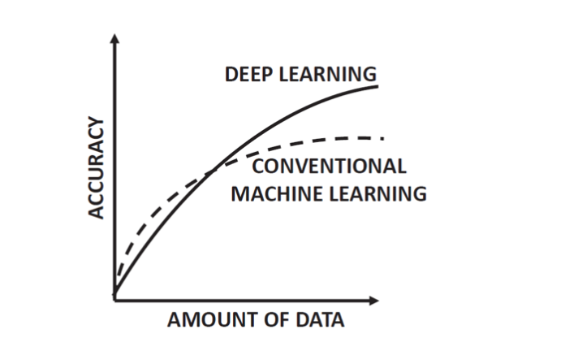

import pandas as pd
import numpy as np
import tensorflow as tf
import tensorflow.keras.layers as tfl
from sklearn.linear_model import LinearRegression
from sklearn.metrics import mean_squared_errorIn this blog, I will share my insights gained from analyzing a simulated dataset comprising 10,000 rows. Specifically, I’ll delve into a comparative analysis between simple models and complex models.
As a foundational understanding, it is widely acknowledged in the field that for simple handcrafted datasets of smaller to modest sizes simpler models outperform neural network models.
Let us validate the same through practical experimentation and exploration.


0. Loading Libraries
1. Generating Simulated dataset
x1 = np.random.normal(size=10000)
x2 = np.random.normal(size=10000) * 2
x3 = np.power(x1,2)
y = x1 + x2 + x3
y1 = (x1 * np.exp(x2) + np.exp(-x3) * x2 ) * x1 + y
finaldf = pd.DataFrame({
"X1" : x1,
"X2" : x2,
"X3" : x3,
"Y" : y
})
finaldf1 = pd.DataFrame({
"X1" : x1,
"X2" : x2,
"X3" : x3,
"Y" : y1
})
print(finaldf.head())
print(finaldf1.head()) X1 X2 X3 Y
0 1.524132 -0.934670 2.322977 2.912439
1 -0.813685 3.410324 0.662084 3.258723
2 0.183997 -3.398534 0.033855 -3.180682
3 0.161710 -4.845459 0.026150 -4.657599
4 -0.567619 3.020272 0.322191 2.774844
X1 X2 X3 Y
0 1.524132 -0.934670 2.322977 3.685127
1 -0.813685 3.410324 0.662084 21.872114
2 0.183997 -3.398534 0.033855 -3.784055
3 0.161710 -4.845459 0.026150 -5.420728
4 -0.567619 3.020272 0.322191 8.136591Here we have created two dataframes;
- One with simple linear relationship
- Other with complex relationship with exponential functions
2. Linear Regression Sci-Kit Learn
2.1 Linear Relationship Model
X = finaldf[["X1","X2","X3"]]
Y = finaldf[["Y"]]lmmodel = LinearRegression()
lmmodel.fit(X,Y)LinearRegression()In a Jupyter environment, please rerun this cell to show the HTML representation or trust the notebook.
On GitHub, the HTML representation is unable to render, please try loading this page with nbviewer.org.
LinearRegression()
lmmodel.coef_array([[1., 1., 1.]])y_pred = lmmodel.predict(X)
mean_squared_error(Y, y_pred)2.3287394852055727e-30Because of the linear relationship between the dependent and indepdent variables; the mse is very low.
2.2 Complex Relationship Linear Model
X1 = finaldf1[["X1","X2","X3"]]
Y1 = finaldf1[["Y"]]lmmodel1 = LinearRegression()
lmmodel1.fit(X1,Y1)LinearRegression()In a Jupyter environment, please rerun this cell to show the HTML representation or trust the notebook.
On GitHub, the HTML representation is unable to render, please try loading this page with nbviewer.org.
LinearRegression()
lmmodel1.coef_array([[2.69112711, 8.39388391, 9.43535975]])y_pred = lmmodel.predict(X1)
mean_squared_error(Y1, y_pred)4385.825525517447Because of the complex relationship between the dependent and independent variables; the mse is very high compared to earlier model.
| Model Type | Datset | MSE |
|---|---|---|
| Sci-Kit LM | Linear Relationship | 2.3287394852055727e-30. |
| Sci-Kit LM | Complex Relationship | 4385.825525517447. |
Now let us explore Neural Network Models.
3. Tensor Flow NN Linear Models.
3.1 Shallow NN - Linear Relationship
modetf = tf.keras.Sequential([
tfl.Dense(1,
input_shape = (3,),
activation = "linear"
)
])modetf.summary()Model: "sequential"
_________________________________________________________________
Layer (type) Output Shape Param #
=================================================================
dense (Dense) (None, 1) 4
=================================================================
Total params: 4 (16.00 Byte)
Trainable params: 4 (16.00 Byte)
Non-trainable params: 0 (0.00 Byte)
_________________________________________________________________modetf.compile(optimizer = "sgd",
loss = "mean_squared_error",
metrics = ["mse"])
modetf.fit(X,Y,epochs=100, verbose=0)<keras.src.callbacks.History at 0x7ec5a55b0f40>modetf.layers[0].get_weights()[array([[1.0000002 ],
[0.99999994],
[1. ]], dtype=float32),
array([1.8922645e-08], dtype=float32)]As we have seen in the previous blog the weights are not same and accurate compared to the OLS model.
mean_squared_error(Y, modetf.predict(X).flatten())313/313 [==============================] - 1s 1ms/step8.450062478432384e-14mse is very low.
3.2 Shallow NN - Complex Relationship
modetf.fit(X1,Y1,epochs=100,verbose=0)<keras.src.callbacks.History at 0x7ec59cd10760>modetf.layers[0].get_weights()[array([[ 7.9459767],
[10.005791 ],
[19.434795 ]], dtype=float32),
array([-2.91453], dtype=float32)]mean_squared_error(Y1, modetf.predict(X1).flatten())313/313 [==============================] - 0s 1ms/step4279.216985484737mse is high compared to earlier one.
| Model Type | Dataset Type | MSE |
|---|---|---|
| Sci-Kit LM | Linear Relationship | 2.3287394852055727e-30. |
| Sci-Kit LM | Complex Relationship | 4385.825525517447. |
| Shallow NN | Linear Relationship | 8.450062478432384e-14. |
| Shallow NN | Complex Relationship | 4279.216985484737. |
Now let us explore Multi-Layer Neural Network Models.
3.3 Multi-Layer NN - Linear Relationship
modetf1 = tf.keras.Sequential([
tfl.Dense(100,
input_shape = (3,),
activation = "linear"
),
tfl.Dense(1,
activation = "linear"
)
])modetf1.summary()Model: "sequential_1"
_________________________________________________________________
Layer (type) Output Shape Param #
=================================================================
dense_1 (Dense) (None, 100) 400
dense_2 (Dense) (None, 1) 101
=================================================================
Total params: 501 (1.96 KB)
Trainable params: 501 (1.96 KB)
Non-trainable params: 0 (0.00 Byte)
_________________________________________________________________Theory it is still a shallow linear model. As activations used are of identity function. So, we will not see any change in mse
modetf1.compile(optimizer = "sgd",
loss = "mean_squared_error",
metrics = ["mse"])
modetf1.fit(X,Y,epochs=100, verbose=0)<keras.src.callbacks.History at 0x7ec5902b9360>mean_squared_error(Y, modetf1.predict(X).flatten())313/313 [==============================] - 1s 2ms/step3.834542424936751e-14mse almost remained the same for this model as to that of shallow NN model.
3.4. Multi-Layer NN - Complex Relationship
modetf1.fit(X1,Y1,epochs=100, verbose=0)
#modetf2_pred =
#mean_squared_error(Y, modetf2_pred.flatten())
mean_squared_error(Y1, np.nan_to_num(modetf1.predict(X1)).flatten())313/313 [==============================] - 0s 1ms/step4506.472209255081mse is also same for this model.
| Model Type | Dataset Type | MSE |
|---|---|---|
| Sci-Kit LM | Linear Relationship | 2.3287394852055727e-30. |
| Sci-Kit LM | Complex Relationship | 4385.825525517447. |
| Shallow NN | Linear Relationship | 8.450062478432384e-14. |
| Shallow NN | Complex Relationship | 4279.216985484737. |
| Multi-Layer NN | Linear Relationship | 3.834542424936751e-14 |
| Multi-Layer NN | Complex Relationship | 4506.472209255081 |
3.5 Mulit-Layer NN with Sigmoid - Simpler Relationship
modetf2 = tf.keras.Sequential([
tfl.Dense(4,
input_shape = (3,),
activation = "linear"
),
tfl.Dense(3,
input_shape = (3,),
activation = "sigmoid"
),
tfl.Dense(1,
activation = "linear"
)
])modetf2.compile(optimizer = "sgd",
loss = "mean_squared_error",
metrics = ["mse"])
modetf2.fit(X,Y,epochs=100, verbose=0)<keras.src.callbacks.History at 0x7ec5901c7b80>modetf2_pred = np.nan_to_num(modetf2.predict(X))
mean_squared_error(Y, modetf2_pred.flatten())313/313 [==============================] - 0s 1ms/step0.013774647608438807Upon introducing a model with a complex activation function to a simpler dataset, the mean squared error (MSE) surged significantly. This sharp increase suggests that such a model may not be suitable for this dataset.
3.6 Mulit-Layer NN with Sigmoid - Complex Relationship
modetf2.fit(X1,Y1,epochs=100, verbose=0)
mean_squared_error(Y1, np.nan_to_num(modetf2.predict(X1)).flatten())313/313 [==============================] - 0s 1ms/step4385.579539532295Since the dataset has intricate complex nature, the mse for this model remained the same.
| Model Type | Dataset Type | MSE |
|---|---|---|
| Sci-Kit LM | Linear Relationship | 2.3287394852055727e-30. |
| Sci-Kit LM | Complex Relationship | 4385.825525517447. |
| Shallow NN | Linear Relationship | 8.450062478432384e-14. |
| Shallow NN | Complex Relationship | 4279.216985484737. |
| Multi-Layer NN | Linear Relationship | 3.834542424936751e-14 |
| Multi-Layer NN | Complex Relationship | 4506.472209255081 |
| Multi-Layer with Sigmoid NN | Linear Relationship | 0.013774647608438807. |
| Multi-Layer with Sigmoid NN | Complex Relationship | 4385.579539532295 |
3.7. Multi-Layer NN with Sigmoid & Relu - Complex Relationship
modetf3 = tf.keras.Sequential([
tfl.Dense(3,
input_shape = (3,),
activation = "relu"
),
tfl.Dense(6,
activation = "sigmoid"
),
tfl.Dense(12,
activation = "sigmoid"
),
tfl.Dense(6,
activation = "sigmoid"
),
tfl.Dense(1,
activation = "linear"
)
])
modetf3.compile(optimizer = "sgd",
loss = "mean_squared_error",
metrics = ["mse"])
modetf3.fit(X1,Y1,epochs=1000, verbose=0)
mean_squared_error(Y1, modetf3.predict(X1).flatten())313/313 [==============================] - 1s 2ms/step4433.14019525845Since the dataset has intricate complex nature, the mse for this model remained the same.
| Model Type | Dataset Type | MSE |
|---|---|---|
| Sci-Kit LM | Linear Relationship | 2.3287394852055727e-30. |
| Sci-Kit LM | Complex Relationship | 4385.825525517447. |
| Shallow NN | Linear Relationship | 8.450062478432384e-14. |
| Shallow NN | Complex Relationship | 4279.216985484737. |
| Multi-Layer NN | Linear Relationship | 3.834542424936751e-14 |
| Multi-Layer NN | Complex Relationship | 4506.472209255081 |
| Multi-Layer with Sigmoid NN | Linear Relationship | 0.013774647608438807. |
| Multi-Layer with Sigmoid NN | Complex Relationship | 4385.579539532295. |
| Multi-Layer with Sigmoid & Relu NN | Complex Relationship | 4433.14019525845 |
This blog serves as a straightforward demonstration illustrating that when a dataset lacks intricate complexities and comprises handcrafted features where each row remains relatively consistent within a random normal distribution, simpler models outperform their more complex counterparts.
It’s important to note that while simpler models excel in such scenarios, neural networks incur significantly longer computing times. Thus, every level of complexity comes with its associated costs. Therefore, it’s crucial for us to clearly define the ultimate objective of our modeling endeavors before venturing into additional complexities.